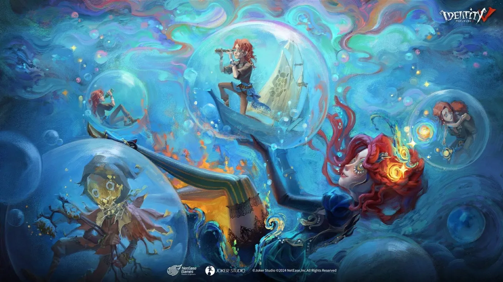

🌙 Feliz Cumpleaños Tuski 🌙
Mooooooonnnn, quería darte un pequeño recordatorio que a pesar de no hablar seguido contigo, siempre serás una persona bastante importante para mí... No pienses que en algún momento me olvidaré de ti. Los momentos y experiencias que hemos compartido son suficientes para nunca olvidarte. Realmente gracias por siempre apoyarme y estar conmigo, y haré lo que pueda para apoyarte a ti. Entiendo que puede que yo esté ocupado, pero NUNCA olvidaré nuestros momentos. Espero que nunca cambies tu forma de ser y siempre tengas esa personalidad que te definía. 💜 Te quiero mucho Ana.
